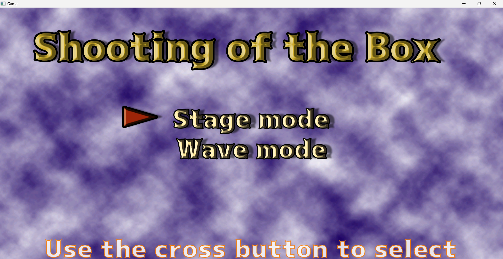
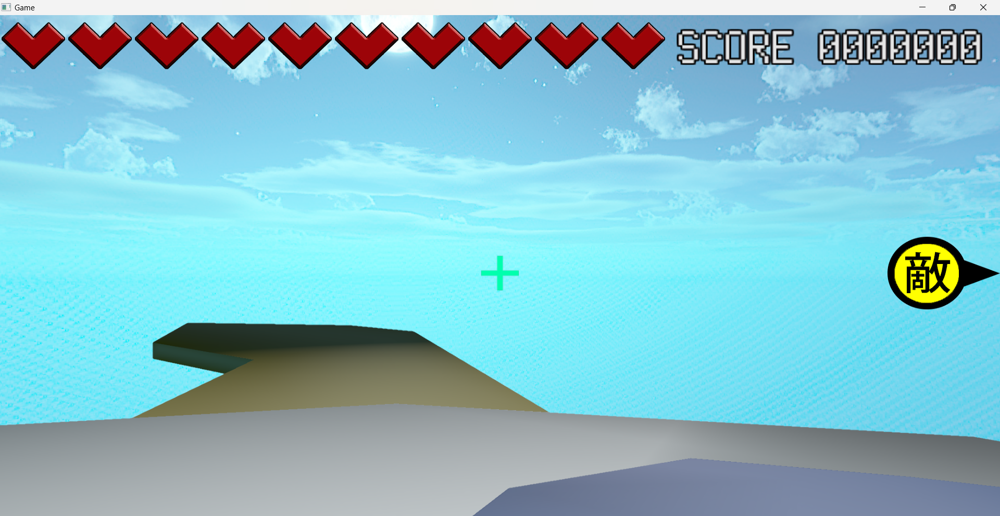
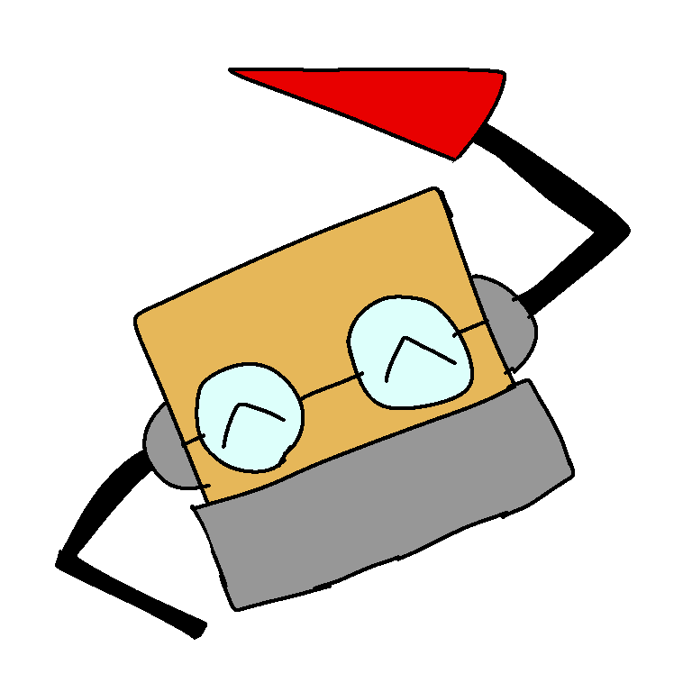

目次
- 初めに
- こだわりポイント1
- こだわりポイント2
- こだわりポイント3
- こだわりポイント4
- まとめ
初めに
かつて、私は3DSに内蔵されていたとあるゲームにはまっていた。
そのゲームはいわゆる「移動しない一人称視点シューティングゲーム」であった。
私はその珍しいゲーム性に惹かれ、何度もそのゲームを遊んだ。
やがて、私はそのゲームをリスペクトしてとあるゲームを作った。
それが今回解説する自作ゲーム、「Shooting of the Box」である。
というわけで、まずはどんなゲームかをざっくりまとめた動画を見てもらいたい。

…タイトル画面諸々すこしダサいのはさておき、これからこのゲームを作るうえでこだわったポイントを解説しようと思う。
こだわりポイントその1:関数を用いることで実現したステージ修正のたやすさ
まずはこのコードを見ていただきたい。
c_enen0->Toujou(ENEACT_1_1,ENERAD_1_1,ENEKYORI_1_1,ENEKOUDO_1_1,ENESOKUX,ENESOKUY);
これは、敵をあらかじめ変数で指定した位置に出現させ、任意の行動をさせることができるコードである。
そう、この一行といくつかの変数を用意するだけで上記の複雑な動作を行えるのだ。
この処理を実現するにあたってあらかじめそれらの動作を行える関数を敵の処理を書いているヘッダファイル内に作り、それを他のcppファイルから呼び出すことができるようにした。
このゲームは個人製作ではあるが、ゲームプランナーがいた時に容易く修正できるような設計にしているのだ。
こだわりポイント2:敵の見逃しを防ぐUI
私のゲームでは次のようなUIを実装している

ここで注目していただきたいのは右端の黄色と黒のUIである。
これは、敵が自分の視界外の右側にいるということを表すUIである。
このUIの実装のため、このゲームにおける敵は少し特殊なコードで動かしている。
const float PAI = 3.1415
m_enowpos.z = cos(m_zrad * (PAI / 180)) * m_distance;
m_enowpos.x = sin(m_zrad * (PAI / 180)) * m_distance;
まず、使用している変数群の意味についてだがPAIは円周率、m_zradは敵キャラがZ+軸を正面としたときに何度の角度にいるかどうかを表した数、m_distanceは敵キャラと主人公の直線距離を表した数である。
本来、この式は２Dにおけるナナメ移動の実装のために用いられる式だが、このゲームでは主人公は座標移動をいっさい行わないためこの式を使って敵を移動させることが容易に可能なのである。
敵の角度を変えたい時はm_zradを、敵とプレイヤーの距離を変えたい時はm_distanceを変えることで容易かつ思い通りに敵を動かすことが可能なのだ。
さて、本題のUI表示の仕組みについてだが、私は上記の式の副産物を利用して実装した。
まずは下記のコードを見ていただきたい。
//Z+軸正面にプレイヤーがいた時の敵とZ+軸との角度を求める
float dairi = m_zrad - c_oresiten->Zrad;
//視界外かどうかのif
if (dairi>SIYAKAKU||dairi<-SIYAKAKU)
{
//0.0f < dairi <= 180.0f or -180.0f > dairi > -360.0f(右に敵がいたとき)
if (dairi <= 180.0f&&dairi > 0.0f || dairi < -180.0f&&dairi > -360.0f)
{
c_makeui->m_keiR = 1;
}
//180.0f < dairi < 360.0f or 0.0f > dairi >= -180.0f (左に敵がいたとき)
if (dairi > 180.0f && dairi < 360.0f || dairi >= -180.0f && dairi < 0.0f)
{
c_makeui->m_keiL = 1;
}
}
このコードではまず最初にZ+軸正面にプレイヤーがいた時の敵とZ+軸との角度を求めている。
なぜこのようなことをするかというと、このコードではプレイヤーが向いているベクトルがZ+軸と同じ向きという過程で処理を進めていくからである。
そのため、敵のz+軸からの角度もそれに合わせて変えなければいけないのだ。
次にif文を用いて先ほど求めた求めた角度が視野角だと定義された定数を超えているかどうかを確認する。
私のゲームではこの一文のみで敵が視野角外かどうかを判断しているのだ。
そして、敵が右寄りにいるか左寄りにいるかをif文でさらに判定し、それに応じたUIの表示処理をしているのだ。
このように、このゲームでは一部の処理を簡単にすることでプログラム制作に関わってない外部の人間でもゲーム内データの微調整ができるようになっている。
こだわりポイント3：ユーザーに配慮したキャラデザや操作ボタン数
私は自分が作るゲームにおいて遊びやすい難易度にするために色々と工夫をしている。
今からその例をいくつかあげよう。
私のゲームではすべての3Dモデルを自分で作っている。
そして、敵のデザインを下の図１のようなものにしている。

一見、粗末に見えるこのデザインだが、実はこれにはきちんと意味がある。
まず、一頭身にした理由についてだが、これは弾を撃つ時に敵に狙いを付けやすくするためである。
次に、腕の赤い武器はこの敵が突撃する時に「このまま激突するとダメージをくらう」ということを説明をつけずにプレイヤーに理解させるためである。
さらに、腕をつけた理由についてだが、これは出現した時に腕を大げさに動かすモーションをさせることでプレイヤーが敵を見つけやすくするためである。
もう一つ、わたしがプレイヤーのこと考えて設計した要素がある。
それは、操作ボタン数である。
このゲームではAボタンで弾発射、Lスティックで視界回転、第一Lボタンを押しながらLスティックを操作すると素早く視界を回転できる。
上記の説明を見てわかるとおり、このゲームではプレイ中はボタン２つとスティック１つだけしか押す必要がないのだ。
これは、プレイヤーがすぐに操作になれるようにするための設計である。
このように、私はキャラデザや操作ボタン数において理不尽要素を少しでもなくしてより多くの人が遊びやすくなるような工夫を施している。
こだわりポイントその4:自作楽曲を用いたゲーム中のＢＧＭ変更
私のゲームで使用されているＢＧＭはすべて私の自作である。
それに伴い、私はゲームＢＧＭの使用タイミングにもこだわった。
このゲームにはステージのＢＧＭが３つ存在する。
それらはすべて同じ旋律で作られており、いわゆる差分というものである。
3つのBGMはそれぞれ違うBPM（曲の速さ)で作られており、曲の速さが早いBGMほど多くの音を使用している。
私はこれを用いてステージの進行具合によってBGMを変えることにした。
最初はBPMの低い差分を使用してゲームの雰囲気に慣れさせ、あるていど進んで敵が多く強くなってきたところでBPMが高い差分を流すようにした。
このような演出はすでに用意されたBGMを使うのでは少し難しくなる。
このように、このゲームではだいたいの素材が自作であることを活かした演出を取り入れているのだ。
まとめ
以上で自作ゲーム「Shooting of the Box」の紹介を終わる。
このポートフォリオを読んで私のゲームの内容や本質が伝わったならなによりである。